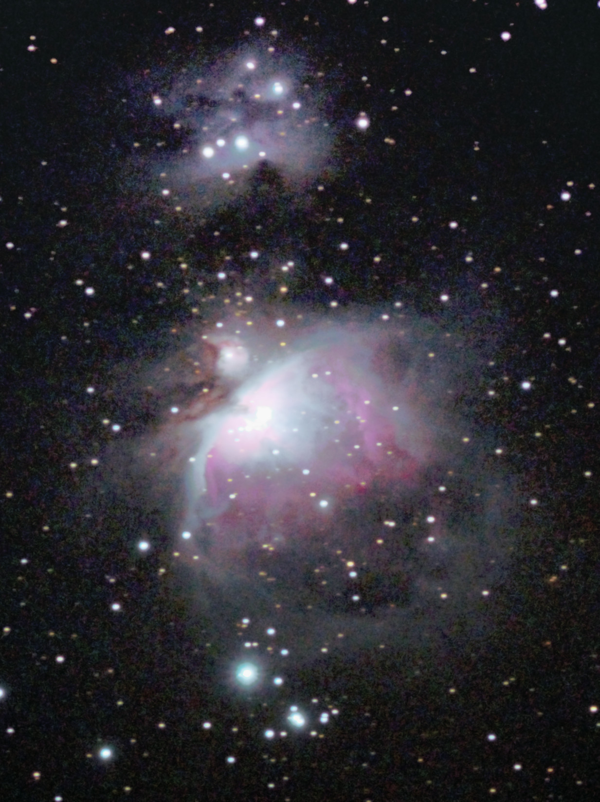

撮影した天体写真です
ネット上にあるものと比べると見劣りするものばかりですが、天体写真を撮ろうと考えている人の参考になれば幸いです
画像サイズが大きいので更新されてもキャッシュが残っていて変化がない可能性があります。更新を確認するときはキャッシュを削除してください。
機材
ここにはミラーレスカメラという非常に安価な機材で自宅から５㎞圏内という光害地で固定撮影した天体写真を載せています
天体写真には最低でも何十万円もする機材が必要とか、山奥へ行かないと撮影できないなどと考ている人が多いかもしれませんが、実際にはこの程度の機材でもそこそこの写真が撮影できます。カメラを持っているなら、一度天体写真にチャレンジしてみてはいかがでしょうか
Z50は入門機として人気なミラーレスカメラです。 価格はボディとダブルズームキットで約15万円です
センサーサイズはAPS-Cで、Hα線もカットするため、淡い天体を撮影するのには少し苦労します。

ビデオカメラ用の三脚で撮影しています。
もちろん赤道儀、望遠鏡、リレーズ、フィルターは使用していません
撮影場所
SQM値が 21.15 (mag/arc sec^2)ほどの自宅から5km圏内で撮影しています
天気のいい日には肉眼で天の川の構造や、M8の存在が確認できます。
撮影方法
インターネットで天体の位置を覚えてから外に出て、覚えた方向にカメラを向け広角で撮影します（露出は20秒ほど)
天体を発見したら最大望遠（35mm換算375mm）で試し撮りします（露出は4秒ほど）
タイマー撮影を２秒に設定してカメラの重さによる三脚のひずみを考えてセットします。画像全体の1/4ぐらい星の動く方向の逆方向にずらしておきます

最大望遠にしてマニュアルフォーカスでピントを合わせます（星が一番小さく、暗い星が一番多く見えるところ）
タイマー撮影をオフにしてインターバルタイマー撮影で撮影します。
１枚の露出は１秒～３秒（北極星に近いほど長い）、撮影間隔は１枚の露出+１秒、撮影枚数は１秒露出で100枚（合計200秒）です。
インターバルタイマー撮影が終わったらもう一度天体の位置を合わせてインターバルタイマー撮影をします。これを何度か繰り返します
SDカードをPCに刺して、sequatorで撮影した画像をスタッキングします。
sequatorは計算方法を"積む"、広角ならレンズのゆがみ補正をオンにし、銀河など中心部と周りの差が激しい場合は"高いダイナミックレンジ"をオンにします（これをしないと白飛びする）。フラット画像はとり方がよくわからないのでなしです。
tifファイルで出力してGIMPで開きます。目標の天体に白飛びがでない程度に"露出"で明るさを補正します。
描画色を50にして描画色で新しいレイヤーを作り、レイヤーモードをオーバーレイにして放射グラデーションや線形グラデーションで背景の明るさが均一になるようにします。（フラット補正）少し補正してみてあまり背景の差が目立たないようであればこれは最後にやります
トーンカーブで色と明度を調整して、背景は黒つぶれしない程度に、ノイズが浮き出ない限界ぐらいまで淡い部分を目立たせます。一度にやり切ろうとせずに、何回かトーンカーブを繰り返します。ここに最も多くの時間を使います
回転してトリミングしてからpng非圧縮で出力します。
苦労するところ
- ノイズが多い 赤道儀なしでAPS-Cなのでノイズを減らすのは苦労します
- HII領域がほとんど写らない 天体にはHII領域と呼ばれるものがあり、656.3nmのHα線を最も多く放出しています。通常のカメラでは、写真を自然に見せるためにこのHα線をカットするフィルターがセンサーについています。天体写真を撮る場合分解してこのフィルターを外す（天体改造という）のですが改造はカメラが使えなくなった場合に保証を受けられないのもあり行っていません。
- 光害 人が住んでいるところで撮影してるので街灯や電線が多く映りこみます。それを解消するために何度も移動を繰り返すことがあります。これは面倒で、時間も使います。
- 三脚のひずみ 機材で書いた通りしっかりした丈夫な三脚ではないので、望遠レンズをつけて慣性モーメントが大きくなるとかなりひずみが発生します。天体を正しい位置に導入するために最低でも３回は固定しなおします
- その他
予備バッテリーがなく、ミラーレスなのですぐに電池が切れます
SDカードの容量がすぐになくなること、リレーズがなくてタイマー撮影が必須なこと、PCでソフトが落ちること なども苦労するところです
天体写真を撮り始めたきっかけ
始まりは2022年11月8日の部分月食です。天王星食があるのと、記録に残したいのがあって家のコンパクトデジタルカメラで撮影をしてみました。三脚すらなかったので手で頑張って固定してなんとか月食の様子が分かる写真が撮れました
もともと性能の良いカメラが欲しかったのもあり、それをきっかけに予算１５万円程度でカメラを探し始めました。ネットや写真用品店で情報を集め、最終的にはZ50に決まりました。しばらくは普通の写真を撮ったりカメラの性能を確かめたり、実写合成の元動画に使ったりしていましたが、購入から３か月後にZTF彗星を撮ってみて、星が流れていることやノイズの多さで天体写真の難しさを知るとともに、天体写真に興味がわきました。
星が流れることに関しては露出時間を短くすれば解決でき、ノイズはどの写真でも一致していないことからノイズを減らすことはできると考えてインターネットで調べスタッキングという手法を知り、フリーのスタッキングソフトを導入しました。その後のオリオン大星雲の撮影で想像以上にいい写真ができ、完全に天文沼にハマまりました。そこからアンドロメダ銀河、オリオン大星雲、馬頭星雲などを撮り続け、現在の撮影方法を確立しました。
天の川
銀河系です。北半球で見える範囲すべてを撮ってつなぎ合わせたいです冬の天の川
冬の天の川は夏の天の川に対して目立った構造もなく淡いです。肉眼ではほとんど見ることができませんでした
2023/03/19 25秒露出,15枚、自宅で撮影
星座が認識しやすい画像にすることができました。GIMPによるフラット補正で天の川を認識しやすくしましたカシオペヤ座付近の天の川
カシオペア座を通る天の川です。肉眼でなんとか見ることができました
2023/07/17 25秒露出,15枚、自宅で撮影
右上にアンドロメダ銀河がうつっています。光害がかなりありましたがフラット補正で対応しました夏の大三角付近の天の川
肉眼で暗黒帯までよく見えました
2023/07/17 25秒露出,15枚、自宅で撮影
夏の大三角を通る暗黒帯がはっきり見えます。個人的には色も気に入っています夏の天の川
天の川の非常に濃い部分です。少し目をならすだけではっきりと見えました
2023/07/17 25秒露出,20枚、自宅で撮影
sequatorを使い広角レンズのゆがみを補正してスタッキングすることでたくさんの枚数を使うことができました かなり気に入っています星雲、星団
星雲が好きなので星団はほとんど撮っていませんオリオン大星雲とランニングマン星雲
M42,M43,NGC1977
肉眼でも見えるとても明るい星雲です。肉眼で見ると３つの星が縦に並んだように見えます。 2023/03/20 １秒露出,280枚、公園で撮影
光害の少ない場所で撮影しました。淡い部分まで目立たせることができました燃える木星雲と馬頭星雲
NGC2024,IC434
肉眼では見えません 中央に見える明るい星がオリオン座の３つ星の左のアルニタクです
2023/03/20 １.５秒露出,300枚、公園で撮影
露出時間を多くとることで、ほとんどがHα線である馬頭星雲を目立たせることができましたばら星雲
NGC2244
冬の大三角にあるほとんどがHα線の星雲です。ほとんどがHα線なので、暗い場所でも肉眼では全く見えません
2023/03/15 １秒露出,300枚、公園で撮影
光害の少ない場所で撮影することでなんとか赤い部分を炙り出すことができましたプレアデス星団
M45
とても大きく明るい散開星団です。肉眼でよく見えます。写真で撮ると星雲が照らされていて美しいです
2023/03/20 １秒露出,100枚、公園で撮影
撮影枚数も少なく、あまり出来のいい写真ではありませんが載せておきます。 今年のうちにリベンジしたいです。2023/09/16 １.６秒露出,400枚、自宅で撮影
無事、今年のうちにリベンジすることができました。かなりマシになっています北アメリカ星雲
NGC7000
ほとんどがHα線の大きな星雲です。肉眼では赤くはありませんが見えないわけではないです2023/06/18 ２秒露出,50枚、自宅で撮影
周りが明るい中でのHII領域は未改造カメラでは難しいです かなり強めに赤色を動かして北アメリカの形がわかるようにしました。次は枚数を増やしたいです干潟星雲、三裂星雲
M8,M20,M21
大型で肉眼で見えるほど明るい星雲です。 個人的には三裂星雲が好きです。2023/06/18 １.５秒露出,180枚、自宅で撮影
明るいおかげではっきりと捉えることができましたわし星雲
M16
>Hα線の明るい星雲です。肉眼ではほとんど見えません
2023/08/08 １秒露出,250枚、自宅で撮影
よく見るとあの有名な創造の柱が見えます ノイズも多いので満足していませんオメガ星雲
M17
暗いところでは肉眼で見えるほど明るい星雲です。
2023/08/11 １.6秒露出,300枚、自宅で撮影
この日は風が強くシーイングがひどかったので解像度は高く見えませんが 薄明後すぐに撮影し少しでも高度が高い状態で撮影したのと露出時間を多くとったことで淡い部分も認識できるようになりました惑星状星雲
恒星の残骸で、小さいのが特徴です。35mm換算375mmまでしか持っていないので、大きめのものでないとまともに写りません亜鈴状星雲
M27
２番目に大きい惑星状星雲です。
2023/08/08 １秒露出,250枚、自宅で撮影
淡い部分がまだ微妙なのでリベンジしたいです
2023/08/10 １.６秒露出,７００枚、自宅で撮影
色、ノイズがよくなりました。形がよくわかります環状星雲
M57
こと座の大きめの惑星状星雲です。
2023/08/08 １秒露出,250枚、自宅で撮影
かなりトリミングしましたが、それでも小さいです。 宇宙のスケールを感じられますらせん星雲
NGC7293
みずがめ座にある巨大な惑星状星雲です2023/09/23 １.６秒露出,605枚、自宅で撮影
淡いとよく聞くのでどこまで映るか試してみたら意外とはっきり映りました しかしHⅡ領域を目立たせようと処理していたらカラーノイズが多くなってしまいました銀河
銀河はいろいろな形があり、面白いです。視直径の大きなものもありますが、ほとんどが淡く小さいのでネット上にあるようにきれいに撮るのは難しいですアンドロメダ銀河とその伴銀河
M31,M32,M110
とても明るく、大きい銀河で、肉眼でも見えます。超望遠で昇ってくるアンドロメダ銀河を建物といっしょに撮って圧縮効果で巨大に見せるのが夢です
2023/07/17 ２秒露出,280枚、自宅で撮影
南中のあたりで撮影したため、自宅でも淡いところを炙りだすことができました。暗黒帯が見えます。周辺部が背景に溶け込む感じの補正でけっこう気に入っています2023/08/11 １.６秒露出,500枚、自宅で撮影
南中の時にさらに露出を重ねました。暗黒帯がくっきり見えますボーデの銀河、葉巻銀河
M81,M82,NGC3077
明るい銀河です
2023/05/12 １秒露出,330枚、自宅で撮影
M81とM82を撮る予定で撮影したら、偶然左上に銀河が写っていました 高度の低い時に撮ってしまったので光害の影響が出て銀河の形をあまり炙り出せませんでしたさんかく座銀河
M33
アンドロメダ銀河からアンドロメダ座ミラクを挟んでちょうど逆にある銀河です。2023/07/17 １秒露出,250枚、自宅で撮影
淡いですがなんとか渦を巻いているのが確認できます トーンカーブに苦戦しました。
2023/08/11 １.６秒露出,600枚、自宅で撮影
さらに露出を重ねてみました。それでもノイズが多いです子持ち銀河
M51
とても明るい銀河です。銀河の中で３番目ぐらいには撮りやすいと思います
2023/05/09 ２秒露出,300枚、公園で撮影
高度と公園撮影と露出を重ねたおかげで腕がはっきりわかります。 露出時間のせいでで星が流れてしまっています。１枚の露出１秒でリベンジしたいです。NGC7331とステファンの五つ子
NGC7331,HCG92
そこそこの大きさと明るさがある銀河です。ステファンの五つ子は明るい銀河が接触するほど密集していて面白いです
2023/09/23 １.６,300枚、自宅で撮影
存在が確認できるぐらいにはなってよかったと思います 次の目標はNGC7331の構造がわかるようにすることです惑星、恒星
とても明るいですが、月以外は小さいのでZ50で撮るのはほぼ不可能です。望遠鏡を使ってるのはこれだけなので許してください。ちなみにZ50で土星を撮ると楕円の形に写ります。木星はスタックすれば何とか縞模様が見えるぐらいです。月
非常に明るく見える地球の惑星で、空を明るく照らすため天体観測するときの敵です。
2023/05/12 ２秒露出,4枚、1/10秒露出,1枚、自宅で撮影
通常はどう頑張っても照らされている部分が白飛びするか、地球照の部分が黒つぶれするかになりますが、2枚作ってGIMPでHDR合成のようなものをすることで両方がよく見える自然な画像ができました
2023/09/29 動画撮影、自宅で撮影
望遠鏡のアイピース、カメラのレンズを取り外し、望遠鏡の光がとおる位置にカメラのセンサーを置いて、三脚と望遠鏡側のねじの微調整を繰り返すことで直焦点撮影に対応していない望遠鏡で直焦点撮影をすることができました 動画撮影をしてRegistaxというフリーソフトで処理をしました。クレーターがはっきり写っています。中秋の名月です太陽
非常に明るいので、普通のカメラではどんな設定にしても撮れません。一般的には減光フィルターを付けて撮ります
2023/09/24 1/160秒,２枚、自宅で撮影
減光フィルターも遮光版も家になかったので、使わないパソコンから偏光板をはがして交差させることで減光しました。パソコンの偏光板には反射が目立たないようにぼかす加工がされていますが、紙やすりでコーティングを削り、何とか撮影ができるようにしました。それでもぼけています土星
環が特徴的です。衛星と縞模様もありますが写すのは難しいです
2023/05/12 ２秒露出,4枚、1/10秒露出,1枚、自宅で撮影
小口径の屈折望遠鏡で、望遠鏡のアイピースにカメラを押し付けるコリメート方式で撮影しました。連写して一番いいものを使いました。
2023/09/18 動画撮影、自宅で撮影
前回よりもピントを追い込んで動画撮影をして何枚かを厳選してGIMPでスタックしました。環の形や環が土星の手前側を通っている部分などはっきりわかります木星
縞模様が特徴的です。衛星はコンパクトデジタルカメラでも映るほど離れていて明るいです
2023/09/18 動画撮影、自宅で撮影
コリメート方式で撮影しました。何枚か厳選してスタックしました。縞模様がよく見えます
2023/09/25 動画撮影、自宅で撮影
三脚で直焦点撮影をして撮りました。かなり縞模様がはっきりしています。正直口径6㎝程度の望遠鏡でここまで写るとは思いませんでした。大赤斑もいつか撮りたいですおまけ
 今までに撮った天体と撮影した月を等倍で並べてみました。もちろん見かけの大きさです。下は上の1.5倍の大きさです
天体の初撮影の時にどのくらいの大きさで見えるのかがわからず困っていたことがあったので、他にも同じような人がいるかもしれないと思い作りました
今までに撮った天体と撮影した月を等倍で並べてみました。もちろん見かけの大きさです。下は上の1.5倍の大きさです
天体の初撮影の時にどのくらいの大きさで見えるのかがわからず困っていたことがあったので、他にも同じような人がいるかもしれないと思い作りました